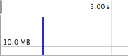

Javier López Pardo - @javilp
Tip: We will use Chrome Dev Tools. They are awesome!
Which kind of app do I have?
Memory vs. Performance vs. Development Cost
"Early optimization is the root of all evil"
D. Knuth
"The heap area is the dynamic memory pool where objects are allocated when they are created by a program"
"The garbage collector is the process that frees a memory area when the objects allocated in it, are no longer retained (being used) by the program"
"A memory leak is a memory area that cannot be collected even when it will be no longer actively used"
"The memory graph is the visual representation of how memory is organized, showing variable values starting in the root node until leaf nodes"
// window
var a = 3;
var myObject = {
prop1: a, // It's a copy
prop2: 'A string'
};
var myArray = [
myObject, // By reference
new Date()
];
myArray = null;
myObject = null;
myArray = null;
myObject.prop1 = null;
// delete myObj.prop1;
myObject = null;
"A memory area can be freed when there is no active reference to it"
"A leak is a memory area that will be never freed by the GC, even when there won't be further active access to it"
What's wrong with this?
function testLeak() {
myArray = [];
for (var i = 0; i < 1000000; i++) {
myArray.push(i.toString());
}
return myArray[0];
}
function runTest() {
testLeak();
}
function testLeak() {
var myArray = []; // Don't forget the var here
for (var i = 0; i < 1000000; i++) {
myArray.push(i.toString());
}
return myArray[0];
}
function runTest() {
testLeak();
}
DON'T USE GLOBAL VARIABLES!
Blue lines are allocated memory
Grey lines are freed memory
See previous slide...
Not only global, but also long-live objects:
var ToDoList = function() {
this._items = [];
this._itemIndex = 0;
this._mainNode = document.getElementById('main');
};
ToDoList.prototype.addItem = function() {
var li = document.createElement('li');
li.innerHTML = 'Item ' + this._itemIndex++;
this._items.push(li);
this._mainNode.appendChild(li);
};
ToDoList.prototype.removeAll = function() {
for (var i = 0, len = this._items.length; i < len; i++) {
this._mainNode.removeChild(this._items[i]);
}
};
var init = function() {
window.todo = new ToDoList();
}
Remove all references to DOM nodes
function testLeak() {
var myArray = [],
mySecondArray = [1, 2, 3, 4],
anotherObject = {a: 'b'};
for (var i = 0; i < 1000000; i++) {
myArray.push(i.toString());
}
return function leakClosure() {
return myArray;
};
}
var closure;
function createMemory() {
closure = testLeak();
}
function freeMemory() {
closure = null;
}
Closures retain scope variables
function registerEvent() {
var text = new Array(10000000).join('x')
var node = document.getElementById('div');
node.addEventListener('click', function() {
return text;
});
};
Remove event handlers when no longer needed
var object;
function createMemory() {
object = {
prop: new Array(10000000).join('x'),
run: function() {
var that = this;
setTimeout(function() {
that.run();
}, 10000);
}
};
object.run();
}
function freeMemory() {
object = null;
}
Again! Closures retain scope variables
var MyClass = function() {
this.prop1 = new Array(10000000).join('x');
this.prop2 = false;
var that = this;
this.eventHandler = function() {
return that.prop2;
};
document.getElementById('node').addEventListener('click',
this.eventHandler);
};
var instance;
function createMemory() {
instance = new MyClass();
}
function freeMemory() {
instance = null;
}
Again! Remove your event handlers
Use Chrome performance.memory API
Enable memory logging with
--enable-precise-memory-info
Tip: Automatize your memory tests (Selenium...)
Use heapdump
var heapdump = require('heapdump');
heapdump.writeSnapshot('/tmp/step1.heapsnapshot');
executeLeakyAction();
heapdump.writeSnapshot('/tmp/step2.heapsnapshot');
Load *.heapsnapshot in Chrome Profile
Fast object
var fastObject = {
prop1: 'string',
prop2: new Date()
};
// Fast operation
fastObject.prop1 = null;
Slow object
var slowObject = {
prop1: 'string',
prop2: new Date()
};
// Slow operation
delete slowObject.prop1;
// It creates 1000 objects and store them in a local cache
var pool = new SimpleMemoryPool({prop1: null, prop2: null}, 1000);
// Get an from the pool, and assign the desired values
var myObject = pool.getInstance('an string', new Date());
// myObject = {prop1: 'an string', prop2: new Date()}
// When I don't need the object anymore, release it to the pull again
pool.release(myObject);
// prop1 and prop2 are nullified and object goes back to the pool